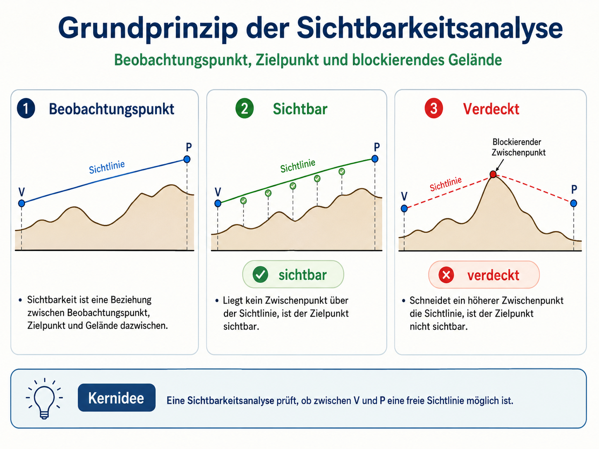
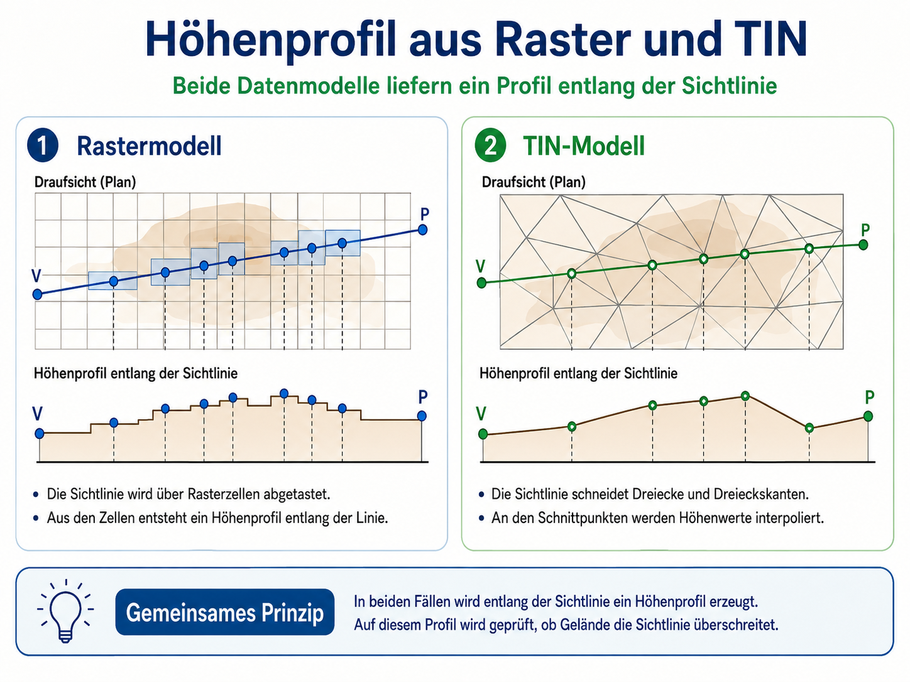
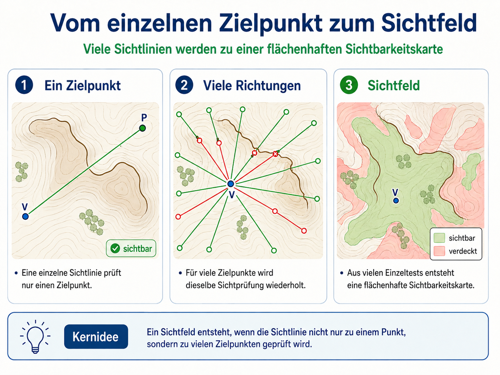
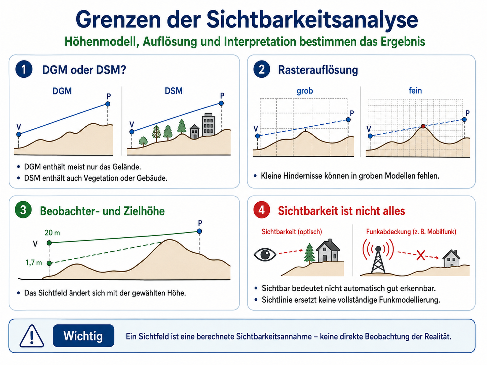

Sichtbarkeitsanalyse ist eine räumliche Ableitung aus einem Höhenmodell. Sie prüft, welche Orte von einem Beobachtungspunkt aus sichtbar sind und welche durch Gelände verdeckt werden. Grundlage ist nicht ein Attributwert, sondern die Geometrie der Erdoberfläche.
Die zentrale Frage lautet:
Kann zwischen einem Beobachtungspunkt und einem Zielpunkt eine freie Sichtlinie gezogen werden?
Wenn die Sichtlinie unterwegs durch höher liegendes Gelände geschnitten wird, ist der Zielpunkt nicht sichtbar. Wenn kein Gelände die Sichtlinie blockiert, ist der Zielpunkt sichtbar. Ein Sichtfeld entsteht, wenn dieser Test nicht nur für einen einzelnen Zielpunkt, sondern für viele Zielpunkte im Raum durchgeführt wird.
Grundprinzip: Sichtlinie, Geländeprofil und Blockierung
Sichtbarkeit ist keine Eigenschaft eines Punktes allein. Sie ist eine Beziehung zwischen drei Elementen:
- dem Beobachtungspunkt,
- dem Zielpunkt,
- und dem Gelände dazwischen.
Im einfachsten Fall wird ein Geländeprofil zwischen Beobachtungspunkt und Zielpunkt betrachtet. Über dieses Profil wird eine direkte Sichtlinie gelegt. Danach wird geprüft, ob ein Zwischenpunkt des Geländes höher liegt als diese Sichtlinie.
Liegt kein Zwischenpunkt über der Sichtlinie, ist der Zielpunkt sichtbar. Liegt ein Zwischenpunkt darüber, wird die Sichtlinie blockiert und der Zielpunkt ist nicht sichtbar.

Geländeprofil und Horizont
Für die Berechnung ist besonders wichtig, wie sich der sichtbare Horizont entlang eines Profils verändert. Vom Beobachtungspunkt aus wird für jeden geprüften Punkt ein Vertikalwinkel berechnet. Dieser Winkel beschreibt, wie steil die Sichtlinie zu diesem Punkt ansteigt oder abfällt.
Ein Punkt ist sichtbar, wenn sein Vertikalwinkel größer ist als der bisher höchste gespeicherte Horizontwinkel in dieser Richtung. Ist der Winkel kleiner, liegt der Punkt hinter einem bereits höheren Geländepunkt und bleibt verdeckt.
Die Berechnung folgt damit einer einfachen Logik:
- Starte am Beobachtungspunkt.
- Prüfe die Punkte entlang einer Richtung nacheinander.
- Speichere den bisher höchsten Horizontwinkel.
- Ein neuer Punkt ist sichtbar, wenn sein Winkel größer ist als dieser gespeicherte Horizont.
- Ein neuer Punkt ist unsichtbar, wenn sein Winkel kleiner ist.
Diese Logik erklärt, warum nahe Hindernisse große Bereiche dahinter verdecken können. Entscheidend ist nicht nur die Höhe eines Zielpunktes, sondern seine Lage im Verhältnis zum Beobachtungspunkt und zum Geländeprofil dazwischen.

Vom einzelnen Zielpunkt zum Sichtfeld
Eine einzelne Sichtlinie beantwortet nur eine einfache Frage: Ist dieser eine Zielpunkt sichtbar oder nicht?
Ein Sichtfeld beantwortet eine flächenhafte Frage:
Welche Bereiche des Untersuchungsgebiets sind vom Beobachtungspunkt aus sichtbar?
Dafür werden viele Sichtlinien in verschiedene Richtungen geprüft. Jeder Zielpunkt oder jede Rasterzelle erhält ein Ergebnis: sichtbar oder nicht sichtbar. Aus diesen Einzelentscheidungen entsteht eine Karte des sichtbaren und nicht sichtbaren Raums.
Das Ergebnis ist also keine gemessene Fläche, sondern eine Ableitung aus dem Höhenmodell. Sichtbarkeit wird dabei aus Geländeform, Beobachterhöhe, Zielhöhe, maximaler Entfernung und gewählter Auflösung berechnet.

Höhenmodell, Raster und TIN
Eine Sichtbarkeitsanalyse benötigt ein Höhenmodell. Dieses kann unterschiedlich aufgebaut sein.
Im Rastermodell ist die Erdoberfläche als regelmäßiges Zellgitter beschrieben. Jede Zelle besitzt einen Höhenwert. Eine Sichtlinie wird dann über das Raster gelegt, und die Höhen entlang dieser Linie werden aus den betroffenen Zellen entnommen oder abgetastet.
Im TIN-Modell wird die Oberfläche aus Dreiecken aufgebaut. Eine Sichtlinie schneidet die Dreieckskanten, und an diesen Schnittpunkten werden Höhenwerte durch lineare Interpolation bestimmt. Daraus entsteht ebenfalls ein Profil entlang der Sichtlinie.
Beide Datenmodelle führen zum gleichen konzeptionellen Problem: Für eine Sichtlinie muss ein Höhenprofil zwischen Beobachtungspunkt und Zielpunkt gewonnen werden. Danach wird geprüft, ob dieses Profil die Sichtlinie überschreitet.

Was Sichtbarkeit bedeutet – und was nicht
Eine Sichtbarkeitsanalyse liefert eine geometrische Aussage. Sie zeigt, welche Bereiche nach dem verwendeten Höhenmodell von einem Beobachtungspunkt aus sichtbar sind. Sie sagt aber nicht automatisch, ob ein Objekt tatsächlich wahrgenommen wird, ob es gut erkennbar ist oder ob ein Funksignal sicher empfangen wird.
Die Interpretation hängt stark von den Eingabedaten und Parametern ab.
Ein DGM beschreibt in der Regel die Geländeoberfläche ohne Gebäude und Vegetation. Ein DSM enthält dagegen auch Oberflächenobjekte wie Gebäude oder Baumkronen. Eine Sichtbarkeitsanalyse auf Basis eines DGM kann deshalb Sichtbereiche anzeigen, die in der Realität durch Wald oder Bebauung verdeckt wären.
Auch die Rasterauflösung ist entscheidend. Kleine Geländekanten, Mauern, Gebäude oder Vegetationsstrukturen können in einem groben Höhenmodell fehlen. Das Sichtfeld wirkt dann glatter und oft größer, als es in der Realität wäre.
Die Beobachterhöhe und die Zielhöhe verändern das Ergebnis ebenfalls. Ein Aussichtspunkt in 1,7 m Augenhöhe liefert ein anderes Sichtfeld als ein Aussichtsturm mit 20 m Höhe. Ebenso macht es einen Unterschied, ob Sichtbarkeit auf den Boden, auf ein Gebäude oder auf eine Antenne geprüft wird.

Anwendungen
Sichtbarkeitsanalysen werden in vielen raumbezogenen Fragestellungen eingesetzt.
In der Landschaftsplanung kann geprüft werden, von welchen Bereichen aus ein Windrad, ein Gebäude, ein Aussichtsturm oder eine technische Anlage sichtbar wäre. Dabei ist entscheidend, ob mit Gelände allein oder mit Gelände plus Vegetation und Bebauung gerechnet wird.
In der Planung von Aussichtspunkten kann untersucht werden, welche Standorte ein großes Sichtfeld erzeugen. Durch Variation der Beobachterhöhe lassen sich zum Beispiel einfache Standorte mit Aussichtstürmen vergleichen.
In Archäologie und historischer Geographie können Sichtbeziehungen zwischen Siedlungen, Wegen, Geländepunkten oder Befestigungen untersucht werden. Dabei darf Sichtbarkeit aber nicht direkt mit Kontrolle, Kommunikation oder Bedeutung gleichgesetzt werden. Sie liefert nur eine räumliche Bedingung, die anschließend interpretiert werden muss.
In der Funkplanung kann eine Sichtlinienanalyse als erste Näherung dienen. Sie ersetzt aber keine vollständige Funkwellenausbreitungsmodellierung. Funkabdeckung hängt zusätzlich von Frequenz, Antennencharakteristik, Beugung, Reflexion, Dämpfung und weiteren Faktoren ab.
In der Wildbiologie kann Sichtbarkeit als Hinweis auf Deckung, Störung oder Exponiertheit genutzt werden. Auch hier bleibt das Sichtfeld nur ein Teil eines Habitat- oder Störungsmodells.
Werkzeug: Sichtfeld in QGIS berechnen
Für die Übung verwenden wir nicht mehr die Cesium-Sandbox, sondern ein GIS-basiertes Werkzeug. Geeignet ist insbesondere:
QGIS → Processing Toolbox → GRASS →
r.viewshed
Benötigt werden:
- ein digitales Höhenmodell als Raster,
- ein Beobachtungspunkt,
- eine Beobachterhöhe,
- optional eine Zielhöhe,
- optional eine maximale Sichtweite.
Das Werkzeug berechnet daraus ein Sichtfeld auf Basis des Höhenrasters. Je nach Einstellung kann das Ergebnis als sichtbare/nicht sichtbare Fläche oder als Raster mit Sichtbarkeitsinformationen ausgegeben werden.
Alternativ kann in QGIS das Plugin Visibility Analysis genutzt werden. Für die Kursübung ist r.viewshed jedoch günstiger, weil es direkt an Rasteranalyse, Höhenmodelle und reproduzierbare GIS-Verarbeitung anschließt.
Übung: Sichtfeld aus einem Höhenmodell ableiten
Kernpunkt
Sichtbarkeitsanalyse übersetzt ein Höhenmodell in eine Karte möglicher Sichtbeziehungen. Sie prüft Sichtlinien zwischen Beobachtungspunkt und Zielpunkten und leitet daraus sichtbare und verdeckte Bereiche ab. Das Ergebnis ist nur so belastbar wie das Höhenmodell, die gewählten Parameter und die fachliche Interpretation der Fragestellung.